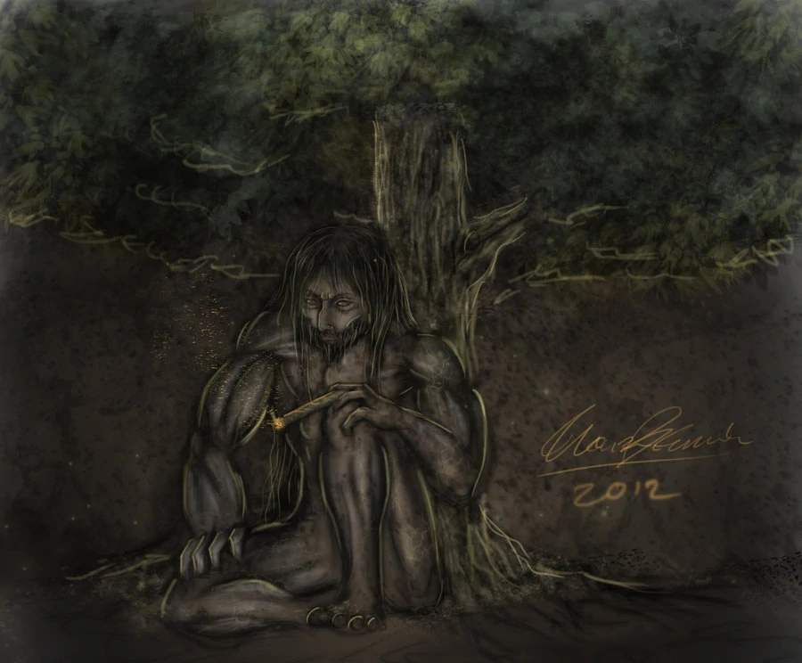

In the deepest corners of San Lorenzo forest, shadows shifted and trees whispered secrets. The villagers spoke of a giant creature, smoking his abano, eyes glowing like twin moons. Few dared venture there, yet some stories said he was more than a monster — a guardian of the woods.
One quiet evening, a young girl named Nina wandered near the Balete trees. She felt fear, but also curiosity. The forest seemed alive, breathing around her, as if guiding her steps.
Suddenly, from the thick mist, appeared a towering figure. His massive hands grasped the ancient tree trunks, yet his gaze fell upon her with a strange, watchful calm.